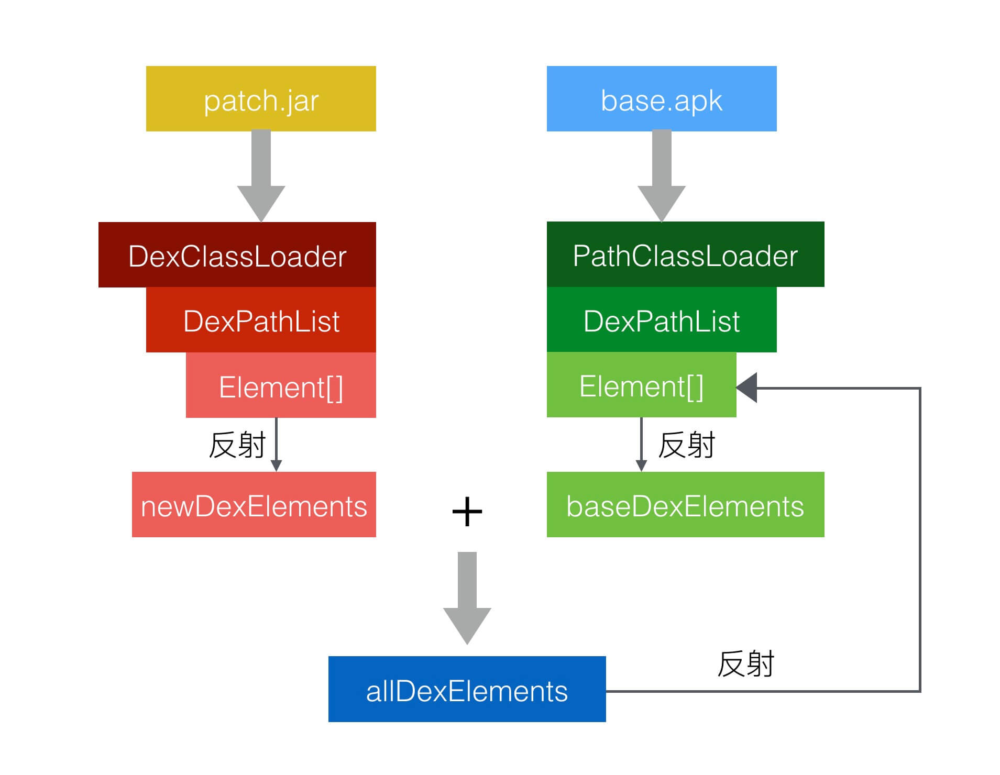

回顾
- 在 Android 中，App 安装到手机后，apk 里面的 class.dex 中的 class 均是通过 PathClassLoader 来加载的。
- DexClassLoader 可以用来加载外置sd卡等包含 class.dex 的 .jar 和 .apk 文件
- DexClassLoader 和 PathClassLoader 的基类 BaseDexClassLoader 查找 class 是通过其内部的
DexPathList pathList来查找的 - DexPathList 内部有一个
Element[] dexElements数组，其findClass()方法（源码如下）的实现就是遍历该数组，查找 class ，一旦找到需要的类，就直接返回，停止遍历：
BaseDexClassLoader
1 |
|
DexPathList.findClass()
1 | public Class<?> findClass(String name, List<Throwable> suppressed) { |
热修复方案实现
网上有一种热修复的方案。

-
假设 MainActivity 中有一个方法
showMsg，现在显示的是 “bug” ，需要修复。1
2
3
4
5
6public class MainActivity extends AppCompatActivity {
...
public void showMsg() {
Toast.makeText(this, "is bug", Toast.LENGTH_SHORT).show();
}
} -
我们修改
showMsg()方法，让其显示正确的结果 “meaasge”。
1
2
3public void showMsg() {
Toast.makeText(this, "is message", Toast.LENGTH_SHORT).show();
} -
制作好补丁包，即 patch.jar 文件，该 patch.jar 文件中就包含已经修复了的 dex 文件，注意此时 patch.jar 会包含一个和原来安装 apk 文件中同样的类
MainActivity。 -
在 Application 的
onCreate方法中检测是否已经下载好补丁包，如果存在补丁包，就通过 DexClassLoader 加载 patch.jar，然后通过反射拿到 DexClassLoader 中的 DexPathList 对象，进而拿到Element[] dexElements数组，这里标记该 Element 数组为 newDexElements 。 -
还是通过反射，拿到 App 默认的 ClassLoader 即 PathClassLoader 的 DexPathList 对象，进而拿到 Element 数组，这里标记下该数组为 baseDexElements 。
-
将 newDexElements 和 baseDexElements 合成一个新的数组 allDexElements ，且保证 newDexElements 中的值在 allDexElements 数组的最前面。
-
然后还是通过通过反射，将合成的 Element 数组设置给 PathClassLoader 的 DexPathList 对象。
-
在 Application 完成初始化之后，会开始加载
MainActivity，加载过程就是通过 DexPathList 对象的findClass()方法来完成的，会从头开始遍历其 Element 数组，会优先查找到之前插入的补丁包中的 dexFile，而原 apk 中的则不会查找到，因此就实现了热修复的目的。
问题
CLASS_ISPREVERIFIED 问题
1 | java.lang.IllegalAccessError: Class ref in pre-verified class resolved to unexpected implementation |
- 在apk安装的时候，虚拟机会将dex优化成odex后才拿去执行。在这个过程中会对所有class一个校验。
- 校验方式：假设A该类在它的static方法，private方法，构造函数，override方法中直接引用到B类。如果A类和B类在同一个dex中，那么A类就会被打上CLASS_ISPREVERIFIED标记
- 被打上这个标记的类不能引用其他dex中的类，否则就会报图中的错误
- 在我们的Demo中，MainActivity和Cat本身是在同一个dex中的，所以MainActivity被打上了CLASS_ISPREVERIFIED。而我们修复bug的时候却引用了另外一个dex的Cat.class，所以这里就报错了
- 而普通分包方案则不会出现这个错误，因为引用和被引用的两个类一开始就不在同一个dex中，所以校验的时候并不会被打上CLASS_ISPREVERIFIED
- 补充一下第二条：A类如果还引用了一个C类，而C类在其他dex中，那么A类并不会被打上标记。换句话说，只要在static方法，构造方法，private方法，override方法中直接引用了其他dex中的类，那么这个类就不会被打上CLASS_ISPREVERIFIED标记。
而 ClassLoader 方式实现的热修复，必然需要在 patch.jar 的 dex 文件中查找其他类。为了防止类打上 CLASS_ISPREVERIFIED 标志，我们只需要在每个类中引用一个单独的 dex 中的类即可。这个 dex 我们命名为 hack.dex，其包含一个 HackLoad.java ，接下来需要做的就是在除了 Applicaton 类以为的类的默认构造方法中都引用一下 HackLoad 类，如下所示：
1 | public class MainActivity extends AppCompatActivity { |
所以势必会带来效率影响，因为odex的产生就是为了优化加载速度。这样会破坏加载优化
需要注意的点
- 在所有类的构造函数中插入这行代码 System.out.println(HackLoad.class); 这样当安装apk的时候，classes.dex内的类都会引用一个在不相同dex中的AntilazyLoad类，这样就防止了类被打上CLASS_ISPREVERIFIED的标志了，只要没被打上这个标志的类都可以进行打补丁操作。
- hack.dex在应用启动的时候就要先加载出来，不然AntilazyLoad类会被标记为不存在，即使后面再加载hack.dex，AntilazyLoad类还是会提示不存在。该类只要一次找不到，那么就会永远被标上找不到的标记了。
- 我们一般在Application中执行dex的注入操作，所以在Application的构造中不能加上
System.out.println(AntilazyLoad.class);这行代码，因为此时hack.dex还没有加载进来，AntilazyLoad并不存在。 - 之所以选择构造函数是因为他不增加方法数，一个类即使没有显式的构造函数，也会有一个隐式的默认构造函数。
所以小结：
需要在应用最开始的时候将我们的DexClassLoader生成的DexElements融合到系统ClassLoader中。紧接着就要打桩破坏odex的标记优化。然后我们才能正常使用我们其他dex中的文件。
Nuva 项目的源码解读
初始化
1 |
|
1 | public class Nuwa { |
1 | public class DexUtils { |